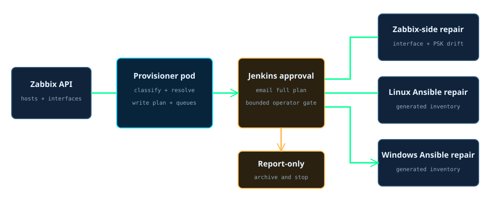
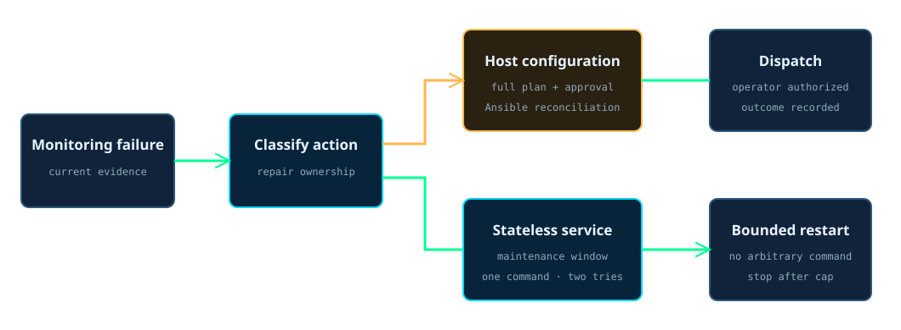

Self-healing monitoring
A red monitoring host becomes a classified repair plan. Safe server-side drift can be corrected directly, but host changes wait for an operator.
A weekly Jenkins pipeline starts a short-lived provisioner pod in Kubernetes. A Python engine reads unhealthy hosts and interface evidence from the Zabbix API, resolves each managed system against the committed Ansible inventory, infers Linux or Windows from its monitoring templates, and writes a report plus generated repair inventories. Jenkins emails the complete plan and waits at a bounded approval gate. Approval lets the engine apply narrow Zabbix-side corrections and lets Ansible reconcile the selected Linux and Windows agents. No approval means report-only: the evidence is archived and no host is changed.
Measured by Jenkins on 2026-08-24: the latest successful report-only run took 1,821 seconds, including its bounded approval window.
How to read it in thirty seconds
Where the monitoring repair runs
Zabbix supplies the current failure evidence. Jenkins owns the weekly schedule and approval state. Detection and remediation run in a disposable provisioner pod, with Vault supplying only the credentials required for the Zabbix API and the selected Ansible targets. PostgreSQL records outcomes as applied, dispatched, or escalated, but it does not claim a host is healthy until a separate verification loop exists.

The seven-step monitoring repair
- Jenkins starts the weekly detection run.
The working stages use a disposable provisioner pod. The top-level pipeline owns no long-running executor.
- The engine reads every unhealthy Zabbix host.
It requests interface availability, error text, and parent templates so the classification is based on current monitoring evidence rather than the alert title alone.
- The engine resolves a trusted target.
The committed Ansible inventory is authoritative for managed hosts. DNS is only a fallback, and the result must pass the expected private-range check.
- The failure is classified and split by operating system.
TLS drift, allowlist drift, network reachability, and unknown errors take different paths. Monitoring templates determine whether a host belongs in the Linux or Windows queue.
- Report mode writes evidence and changes nothing.
The engine creates the human-readable report, JSON queues, and exact generated Ansible inventories. Jenkins archives and stashes all of them before the gate.
- The full plan goes to the operator.
The email links directly to the Jenkins input page and includes the report. The gate waits up to 30 minutes, then closes safely if approval is not granted.
- Approval dispatches only the planned repairs.
The engine can update narrow Zabbix-side drift. Linux and Windows agent fixes run through their own Ansible roles and generated inventories. Without approval, both stages are skipped.
Healing is narrower than restarting everything
The main pipeline is approval-gated because agent configuration and firewall state are live-host changes. One separate automatic path exists for a stateless service restart. Its monitoring action is fenced to one named command, limited to two attempts, and suppressed during maintenance windows.

How it runs now
| When | What runs | What the result proves |
|---|---|---|
| Weekly | Jenkins detects unhealthy hosts, classifies the failures, and archives the proposed plan. | A successful detection proves the evidence was read and the plan was produced. It does not prove a host changed. |
| At the approval gate | The operator receives the complete plan and may approve or leave it report-only. | No approval means every host-level stage was skipped. |
| After approval | Narrow Zabbix-side corrections run, followed by the generated Linux and Windows Ansible inventories. | The outcome records applied or dispatched work. It does not yet claim post-repair health. |
| For the allowlisted service | Zabbix may request one stateless restart when the problem is not maintenance-suppressed, with a hard two-attempt cap. | The action cannot become arbitrary remote execution or an unbounded restart loop. |
| Continuously | Zabbix observes the fleet and PostgreSQL retains the self-heal outcome record. | The system can explain what it saw and attempted while keeping verification distinct from dispatch. |
What broke
An expected timeout looked like a failed repair
By 2026-08-09, three consecutive weekly runs had detected normally, emailed their plans, and then ended as aborted when nobody approved within 30 minutes. No host had been changed, but the red build history made a safe report-only outcome look like a broken pipeline, and the reported drift went unread for three weeks.
The correction
The gate now catches the timeout and leaves the run successful with healing skipped. The report remains archived and emailed. Only a real detection or remediation error turns the job red.
The lesson kept in the design
Safety and status semantics are separate controls. The timeout already prevented an unapproved change. Jenkins also needed to describe that safe stop truthfully so operators could distinguish no approval from no report.
What I would do differently
I would separate detection and remediation into two linked runs. Detection could finish immediately with an immutable plan artifact, while approval would start a second job against that exact plan. That would keep the weekly health signal short, make approval age explicit, and avoid using a 30-minute waiting build to represent work that may never be authorized.
Live alerting evidence
This public dashboard shows evaluator health, firing severity, silences, notification delivery, and latency. Alert names, hosts, incident text, recipients, and management links stay private. The project story explains remediation; this view shows whether the alerting path itself is working now.
Checking the live alerting dashboard.
The live alerting dashboard is unavailable. No cached alert count is presented as current.